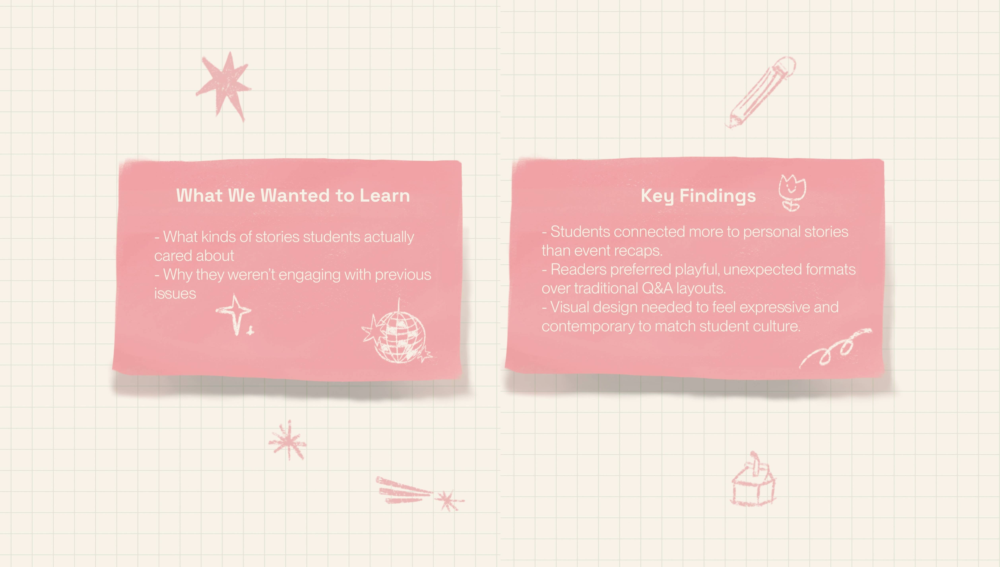
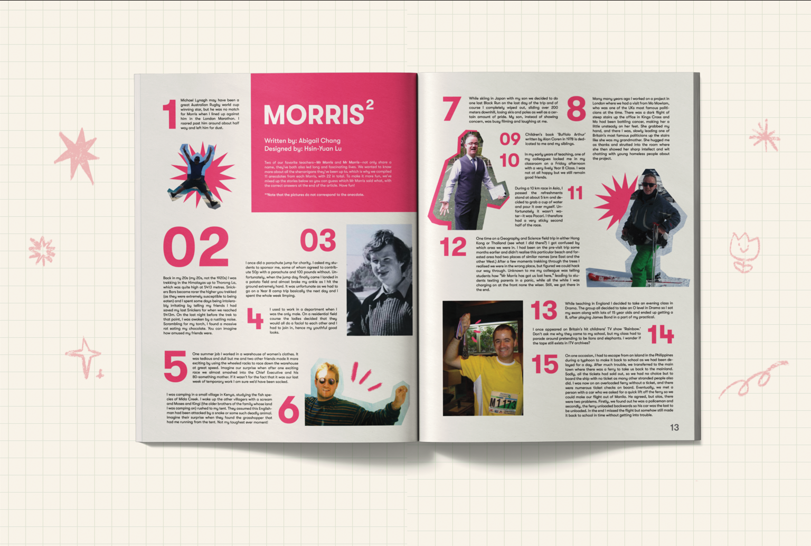
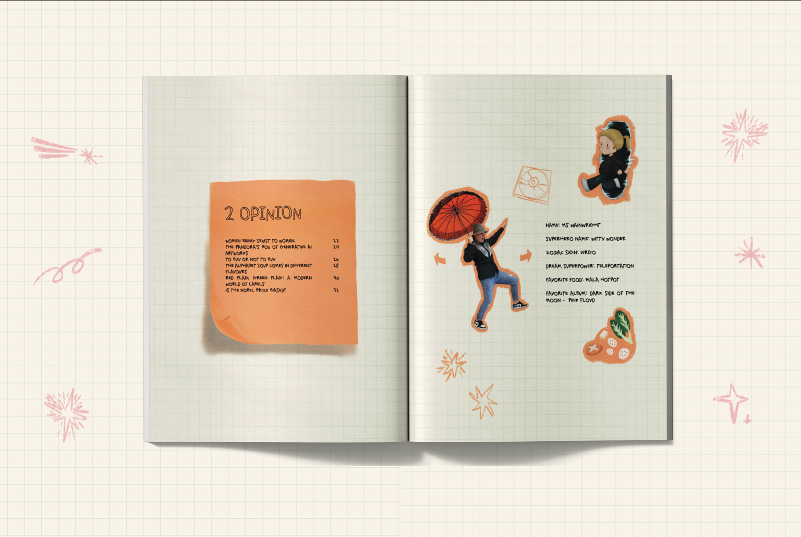

01 Overview
Transforming narratives into interactive experiences.
PEAK Magazine is Taipei European School (TES)’s most popular student publication, intended to provide
an insight into campus life. However, over time it had shifted toward conventional, surface-level
coverage that felt disconnected from the student body.
To address this, I reoriented Issue 12 of the magazine towards one that prioritised student
voices and narratives of the campus community.
02 Context/Problem
Students did not see themselves represented in the magazine, which reduced readership & engagement, especially with the rise of other publications in TES.
We saw an opportunity to reposition PEAK as a platform for storytelling by and for the community.
The publication faced three key challenges:
As Co–Editor in Chief, I led a shift from purely information delivery → narrative experience, treating the magazine as a designed interaction.
How might we redesign the magazine experience to strengthen connection between students and faculty whilst being an engaging experience for readers?
03 Research
We did informal interviews with both students and faculty, reviewed past successful issues and had collaborative brainstorming workshops with staff.

These insights pushed us to rethink not just what we published, but how audiences interacted with the content.
04 Process
Interactive Storytelling
Instead of a standard interview format, we designed an interactive reading experience:
- Anecdotes were presented as a matching activity, inviting readers to guess which story belonged to which teacher.
- Layout and pacing encouraged curiosity and active participation rather than passive reading.


Highlighting Faculty
To strengthen connections within the school community, teachers were invited to share personal life stories, making them more relatable to students. We also turned section dividers into teacher spotlight features instead of generic graphics. These were designed as video game–style character cards and paired with sticky note-inspired text elements, creating a more informal and memorable experience.
To extend this storytelling beyond print, we collaborated with the social media team to create short-form promotional videos aligned with current trends (e.g., Hot Ones interviews with faculty).
Content Expansion
We expanded the magazine’s content to better represent student and faculty experiences. This included increasing the number of articles within the Features and Lifestyle sections and shifting lifestyle content to be more locally relevant, such as highlighting restaurants and school community experiences.
We also introduced playful, relatable content, like community-based ratings (e.g., “TES Toilet Rankings”), to make the magazine feel more engaging and authentic. These additions were supported by a consistent visual approach using gridded backgrounds and cutout-style graphics, creating a notebook-inspired aesthetic that ties back to student life.

05 Solution
The redesigned issue emphasized:
- Interactive editorial formats like Morris Squared
- A cohesive but expressive design system applied across spreads
- Cross-platform storytelling, aligning print with digital engagement
- Emphasised relatability through articles about the campus and Taipei
06 Conclusion
Results
Issue 12 of PEAK Magazine successfully:
- Increased student interest and conversation around the magazine
- Strengthened connections between students and faculty through narrative features
- Reinforced PEAK’s original mission of documenting student life meaningfully
- Received multiple nominations from SHINE media awards
What I Learned ✦
- Editorial design is also a form of experience design — readers interact with structure, pacing, and participation.
- Designing for a community requires listening first and resisting assumptions about what audiences want.
- Collaboration across writers, designers, and media teams is essential to maintain both creativity and cohesion.
What I Would Improve ✦
- Expand articles to include student-generated submissions, for further relatability.
- A website could have been made to further promote the magazine and make the experience a lot more interactive, such as being able to put our magazine crossword online.